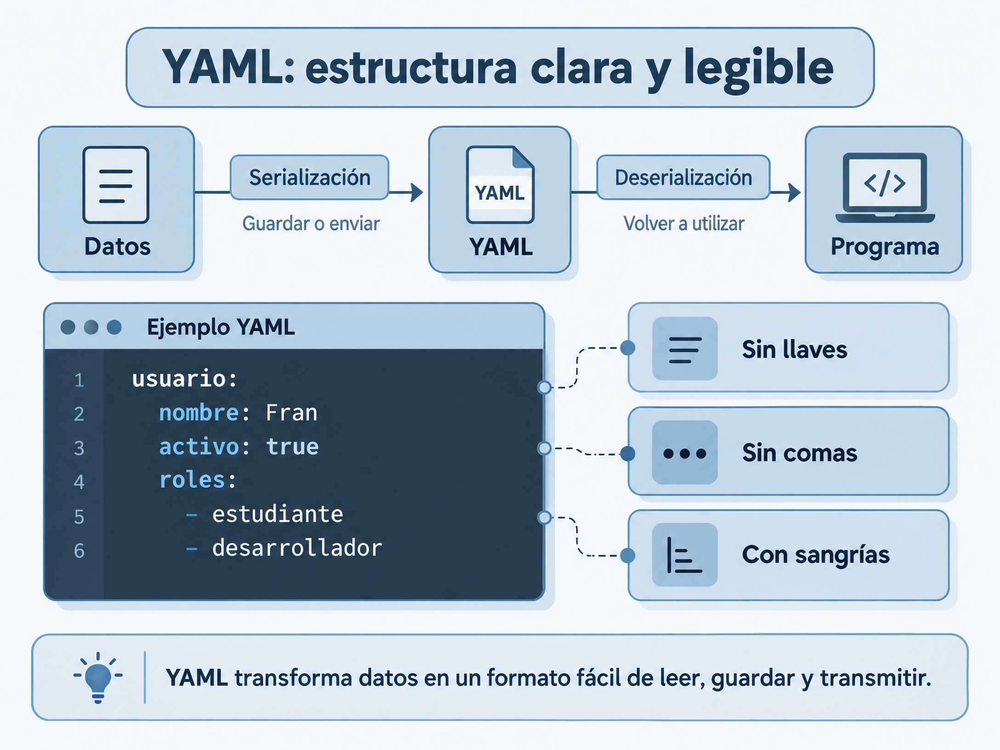

YAML

Definición
YAML (YAML Ain't Markup Language) es un formato de serialización de datos diseñado para ser fácilmente legible por las personas. Resuelve la complejidad visual de otros formatos al eliminar etiquetas, llaves o corchetes obligatorios, utilizando una sintaxis limpia y directa. El objetivo principal es estructurar información jerárquica de forma que cualquier desarrollador pueda entenderla y editarla de un vistazo sin cometer errores de formato.
¿Cómo organiza los datos?
Estructura la información mediante niveles de indentación estricta utilizando espacios (nunca tabuladores). Define pares de clave y valor mediante dos puntos, listas o colecciones usando un guión seguido de espacio, y permite agrupar bloques de datos complejos en estructuras anidadas de forma intuitiva.
Usos habituales
Es el estándar principal para archivos de configuración en entornos de desarrollo y servidores, como Docker Compose, Kubernetes, herramientas de integración continua (CI/CD) y definición de infraestructura como código.Es el estándar principal para archivos de configuración en entornos de desarrollo y servidores, como Docker Compose, Kubernetes, herramientas de integración continua (CI/CD) y definición de infraestructura como código.